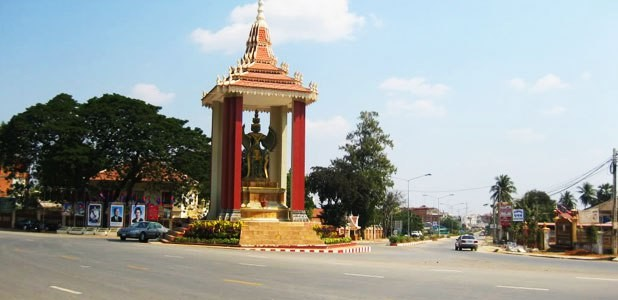

ការពិពណ៏នាអំពី ខេត្តនីមួយៗនៅក្នងប្រទេសកម្ពុជា
ទំព័រដើម
តាកែវ
ភ្នំពេញ
កែប
ព្រះសីហនុ
ស្វាយរៀង
កំពង់ធំ
បាត់ដំបង
ពោធ៏សាត់
សៀមរាប
រតនគីរី
មណ្ឌលគីរី
ក្រចេះ
ត្បូងឃ្មុំ
កំពង់ចាម
ព្រៃវែង
កណ្តាល
ឧត្តរមានជ័យ
កំពង់ឆ្នាំង
កំពង់ស្ពឺ
បន្ទាយមានជ័យ
កោះកុង
ប៉ៃលិន
កំពត
ស្ទឹងត្រែង
ព្រះវិហារ
ទំនាក់ទំនង
ខេត្តបន្ទាយមានជ័យ

ព័ត៌មានសង្ខេបអំពីខេត្តបន្ទាយមានជ័យ
> ខេត្តបន្ទាយមានជ័យ គឺជាខេត្តមួយនៃព្រះរាជាណាចក្រកម្ពុជាដែលស្ថិតនៅចុងពាយ័ព្យនៃប្រទេសដែលមានសេដ្ឋកិច្ចយ៉ាងសំខាន់មួយរបស់ប្រទេសជាតិ។ខេត្តនេះមានព្រំប្រទល់ខេត្តជាប់ខេត្តឧត្តរមានជ័យនៅខាងកើតជាប់ខេត្តសៀមរាបនៅខាងត្បូងជាប់ខេត្តបាត់ដំបងនិងមានព្រំដែនរួមអន្តរជាតិជាមួយប្រទេសសៀមនៅខាងលិច។ទីរួមខេត្តនិងទីក្រុងធំបង្អស់គឺក្រុងសិរីសោភ័ណនិងក្រុងប៉ោយប៉ែត។ខេត្តបន្ទាយមានជ័យគឺជាខេត្តធំបង្អស់ទី ១៣ នៃព្រះរាជាណាចក្រកម្ពុជា។ខេត្តនេះមានក្រុងចំនួន ០២ គឺក្រុងសិរីសោភ័ណនិងក្រុងប៉ោយប៉ែតនៅប៉ែកខាងលិចនៃខេត្តគឺជាព្រំដែនអន្តរជាតិឆ្លងចូលទៅខេត្តស្រះកែវ ប្រទេសសៀមប្រវែង ១៥៣ គម។ខេត្តបន្ទាយមានជ័យគឺជាខេត្តមួយក្នុងចំណោមខេត្តទាំង ០៩ ដែលជាផ្នែកនៃទុនបម្រុងជីវមណ្ឌលទន្លេសាប។
> ឋិតនៅចម្ងាយ ៣៥៩ គីឡូម៉ែត្រពីរាជធានីភ្នំពេញតាមផ្លូវជាតិលេខ ០៥ និងមានទីតាំងជាប់នឹងព្រំប្រទល់ខេត្តបាត់ដំបង ខេត្តឧត្ដរមានជ័យ ខេត្តសៀមរាប និង ខេត្តស្រះកែវ ប្រទេសសៀម។ខេត្តបន្ទាយមានជ័យកំពុងទទួលបានភ្ញៀវទេសចរណ៍យ៉ាងច្រើនកុះករតាមរយៈកាស៊ីណូខ្នាតអន្តរជាតិមួយដែលកំពុងបើកឲ្យមានការចូលលេងកម្សាន្តទាំងយប់ទាំងថ្ងៃ។តំបន់កាស៊ីណូនេះក៏មានរៀបចំជាផ្នែកផ្សេងទៀតដូចជា ភោជនីយដ្ឋាន សណ្ឋាគារ ផ្សារលក់ឥវ៉ាន់ផងដែរ។ភ្ញៀវដែលទៅកម្សាន្តនៅទីនោះភាគច្រើនមកពីប្រទេសសៀមនិងប្រទេសចិនឯភ្ញៀវជនជាតិផ្សេងៗទៀតពុំសូវមាននោះទេ។បើចំពោះជនជាតិខ្មែរជាអ្នកទេសចរណ៍សាមញ្ញវិញពួកគេច្រើនទៅដើម្បីកម្សាន្តភ្នែកតែប៉ុណ្ណោះពុំសូវមានអ្នកដែលទៅដើម្បីប្រព្រឹត្តល្បែងស៊ីសងនោះឡើយ។មិនមែនមានតែតំបន់កម្សាន្តច្រកព្រំដែនលក្ខណៈអន្តរជាតិប៉ោយប៉ែតប៉ុណ្ណោះទេដែលភ្ញៀវទេសចរណ៍ចាប់អារម្មណ៍នោះខេត្តបន្ទាយមានជ័យនៅមានតំបន់កម្សាន្តមួយចំនួនទៀតដែលបានទាក់ទាញនិងកំពុងអភិវឌ្ឍដើម្បីទាក់ទាញភ្ញៀវទេសចរណ៍ទៀតផង។
> ខេត្តបន្ទាយមានជ័យមាន ០២ ក្រុង និង ០៧ ស្រុក :
- ក្រុងប៉ោយប៉ែត
- ក្រុងសិរីសោភ័ណ
- ស្រុកមង្គលបុរី
- ស្រុកភ្នំស្រុក
- ស្រុកអូរជ្រៅ
- ស្រុកព្រះនេត្រព្រះ
- ស្រុកថ្មពួក
- ស្រុកស្វាយចេក
- ស្រុកម៉ាឡៃ